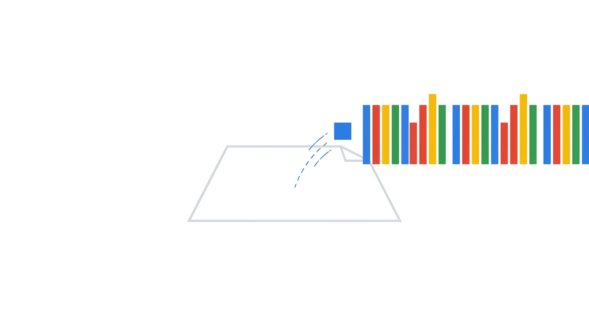
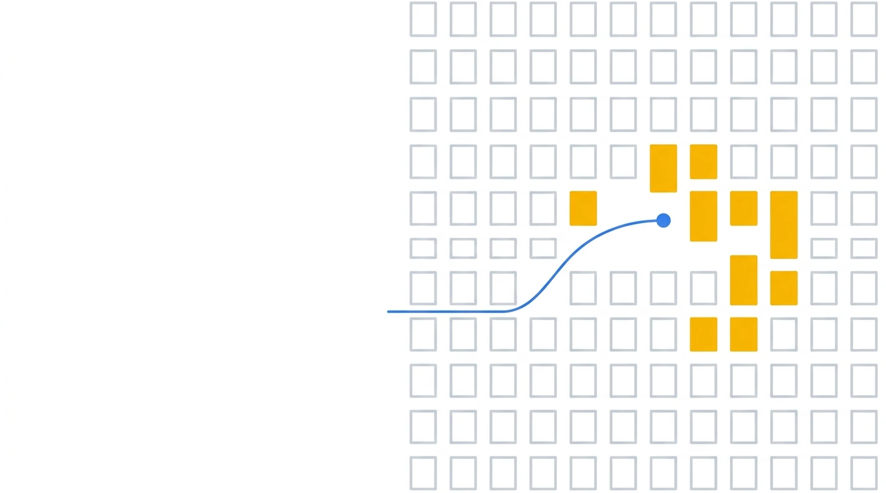
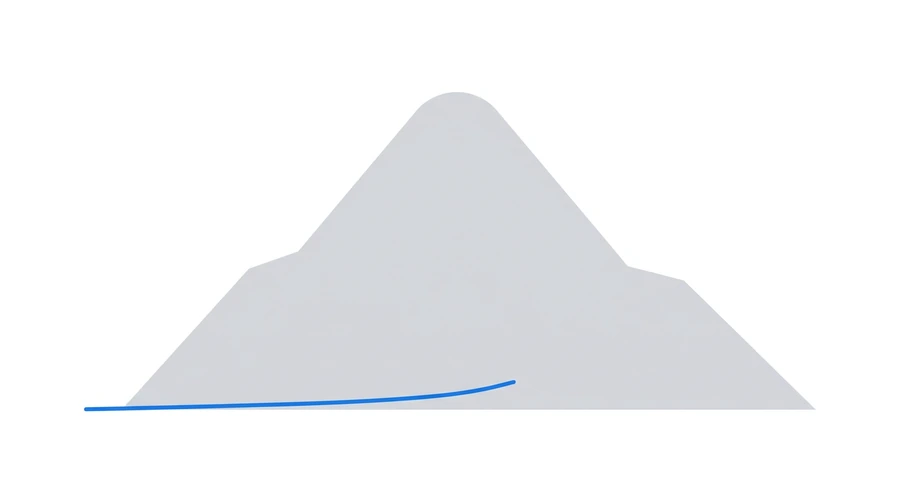
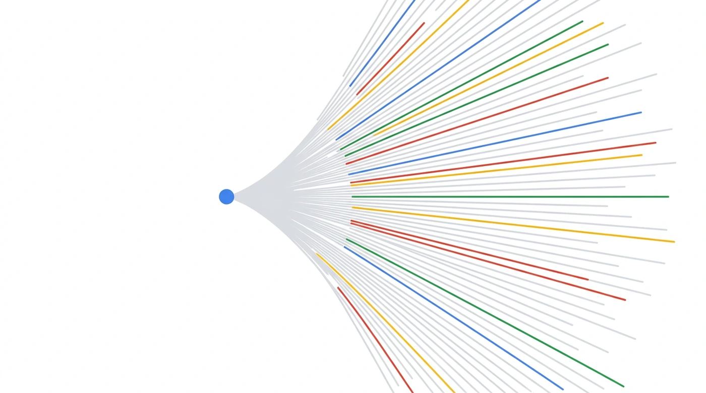

走完之后，「为什么这个模型需要一个机房」就不是一句口号，而是一串你自己算出来的数。
DeepSeek V3。喂给它一篇 128K token 的长文档，做一次 prefill ——
把整篇读进去，还没开始往外吐字。
读完这一遍，有一样东西必须留在显存里：
后面每生成一个字，都要回头用到前面每一个字、在每一层算出来的 K 和 V。
这就是 KV cache。
问的就是它：这一次 prefill，留下了多大一份 KV cache？
参照物 —— 一个 TPU v7 device 可用 HBM 约 94.74 GB。
答案是 8.58 GiB ——
一张卡的 10%。
另外三个选项每一个也都是真数字，只是换了一种存法。
这四个数其实就是四代注意力：同一个模型、同一篇文档，
只因为「每个 token 每层存几个数」不一样，答案就跨了 128 倍。
第 2 步整节要讲的，全在这四个数的差距里。
8.58 GiB 是怎么来的 —— 三步，每步只乘一个数：
576 个数 × 2 B
576 ＝ 512（压缩后的 KV）＋ 64（RoPE 那一截）
× 61 每层各存各的，躲不掉
× 131,072 一张卡的 10%
那四个选项，其实是四种存法 —— 同样 128K、61 层、bf16：
| 选项 | 存法 | 每 token 每层 | 全长 | 相对 MHA |
|---|---|---|---|---|
| 约 500 GB | MHA · 每个头各存一份（最传统） | 32,768 | 488.00 GiB | 1× |
| 约 30 GB | GQA · 128 个头分 8 组，每 16 个共用一份（Llama 那一类） | 2,048 | 30.50 GiB | 16× |
| 约 9 GB ✓ | MLA · 压成一个 512 维的潜向量（V3） | 576 | 8.58 GiB | 56.9× |
| 约 4 GB | MQA · 所有头共用一份（最省） | 256 | 3.81 GiB | 128× |
MLA 落在 GQA 和 MQA 中间，但质量比这两个都好 —— MQA 更省，可它是靠让所有头共用一份省出来的，表达力是真丢了、找不回来； MLA 省得几乎一样多，却没让任何一个头做出牺牲。这就是第 2 步的主线。 （GQA 那行按 Llama 系列常见的 8 组折算，不是 V3 的配置； 线性注意力和窗口注意力不在这张表里 —— 它们改的不是「每 token 存多少」而是「存不存」。）
但重点不是这几个数字。重点是 —— 你能不能自己把它们算出来，以及算的过程中会撞见哪些反直觉的东西。 这一课就干这一件事：跟着一个 token 走完全程，每走一步就把账算一遍。
早就不是 GPT-3 175B 那个时代了。
后来的开源模型基本都从它出发再改。要讲清楚「现在的大模型长什么样」， 拆它一个，比泛泛讲十个有用。
MLA 把 KV cache 压下去、细粒度 MoE 把激活参数压下去、 FP8 把训练成本压下去。
显存、算力、带宽 —— 三个瓶颈，三个答案。 这正是这门课要建立的那条因果链。
参数量这个数，单独看没有意义。摆到一起才有。
后面每一步都按这一套算，中途不换。顶上那条控制台可以改，全页数字跟着变。
131,072 token
先把单条算清楚，要乘再乘
权重与激活都按 2 字节
反向与优化器状态留到专题四
一张表，后面所有计算都从这里取数。全部来自官方 config.json，没有一个是估的。
| 骨架 | 值 | 说明 |
|---|---|---|
hidden_size | 7168 | 残差流宽度，记作 d |
num_hidden_layers | 61 | |
first_k_dense_replace | 3 | 前 3 层 dense，后 58 层 MoE |
vocab_size | 129,280 | |
max_position_embeddings | 163,840 | YaRN 从 4K 外推来的 |
tie_word_embeddings | false | ⚠️ 进出口是两份独立矩阵 |
num_nextn_predict_layers | 1 | MTP |
| 注意力 · MLA | 值 | 说明 |
|---|---|---|
num_attention_heads | 128 | |
q_lora_rank | 1536 | Q 也走低秩 |
kv_lora_rank | 512 | ⭐ KV 压到 512 维 |
qk_nope_head_dim | 128 | 每头 QK 实际 192 维 |
qk_rope_head_dim | 64 | |
v_head_dim | 128 |
| MoE | 值 | 说明 | MoE | 值 | 说明 |
|---|---|---|---|---|---|
n_routed_experts | 256 | moe_intermediate_size | 2048 | ⭐ 细粒度 | |
n_shared_experts | 1 | 每 token 都过 | intermediate_size | 18,432 | 只有前 3 层 dense 用 |
num_experts_per_tok | 8 | top-8 | n_group / topk_group | 8 / 4 | 分组限制路由 |
scoring_func | sigmoid | 不是 softmax | topk_method | noaux_tc | 无辅助损失均衡 |
一个 token 从文字进来，从概率分布出去。中间七步。

这一步什么都没算，只是查了一次表。但显存已经掉了一块。
先看它落在哪 —— 把同代几个模型的词表放到同一根轴上，这个数一点都不特别。
config.json 的 vocab_size。
Llama 3 的 128,256 和 V3 的 129,280 几乎是同一个点 —— 图上那两个标记本来就叠在一起。词表矩阵的大小只跟「词表 × d」有关，跟层数一点关系都没有。 所以模型越深越大，这笔钱占比越小。
所以这张图上「往大做要赔钱」那一条，在 V3 身上几乎不构成阻力 —— 真正拉住它的是另外两条：罕见词学不好，以及出口 softmax 变贵。
SolidGoldMagikarp 那一类）。
记住这个 d = 7,168，它是这个模型的「主干道宽度」，后面每一步都会用到它。 一句话解释这个数：7,168 = 128 × 56 = 256 × 28 —— 两边都整除，所以在 TPU 和 GPU 上都不会因为补齐而白算。
约束（硬的）：它必须对齐硬件的矩阵单元。 TPU 的 MXU 是一块脉动阵列，v6e 和 TPU7x 上是 256 × 256，更早的世代是 128 × 128； NVIDIA 那边的对齐建议是 FP16 下维度取 8 的倍数，A100 上取 64 的倍数。 7,168 对 128 和 256 都整除，两边都不会有补齐浪费。 这条不管谁来定这个数都躲不掉。
取舍（软的）：同样的参数预算，做宽一点还是做深一点。 这个在每个模型上都要重做一次，而 DeepSeek 从没公开说过 7,168 是怎么定的。
拿 token id 去那张 129,280 × 7,168 的大表里 取出对应的那一行 —— 就这样。这条路径在算力账上是 0。 不过「一定是查表」这个直觉在真实框架里并不成立，展开看。
它在数学上等价于「one-hot 向量 × 嵌入矩阵」。直觉上没人会真去做那个乘法 —— 那是拿 129,280 次乘加去换 1 个数。但两条路在真实训练框架里都在跑，而且是一个显式开关。
base.yml 里这个开关默认是 false，也就是走 gather。
但仓库里 34 份实跑配置显式把它打开，没有一份显式关掉 —— 而且不只是 TPU，
连 GPU 那批模型配置（llama3、mixtral）也是打开的。默认值和实际用法是反的。
所以准确的说法是：「算力是 0」只对 gather 那条路成立。 换条编译路径它就不是 0，只是分母够大，那 0.46% 淹没在噪声里。 至于为什么值得多花这笔算力 —— 它把一次不规则的稀疏取行变成了一个规整的、 能沿词表维切分的稠密矩阵乘，反向也随之变成矩阵乘。 但这只是最合理的解释，不是公开资料里写明的理由，别当结论用。
显存两条路一样：那张表本身要常驻，取出来的张量也要占地方 —— 见右边的图。
在标准 MHA 里，hidden = 头数 × 每头维度 是必须成立的等式。
V3 不成立 —— 而且差得不是一点点。
o_proj 收回 7,168。o_proj 是 MLA 一层里最大的那块权重（117.44 M，占一层的 63%） ——
不是它本身有什么特殊，纯粹是因为它跨着上图那道口子：
输入 16,384、输出 7,168，两头都很宽。
更要紧的是这道口子放开之后的后果：头数和 d 从此可以各按各的道理定， 不必再互相迁就 —— 这是后面第 2 步能把 128 个头全部保留下来的前提。
整课的重头，也是 V3 最值得讲的地方。建议留 15 分钟给这一步。
注意力要让每个 token 看到它前面所有 token。为了不重复计算，前面那些 token 的 K 和 V 要存下来 —— 这就是 KV cache。它的大小是：
两个线性相乘，就是灾难。 序列从 4K 涨到 128K 是 32 倍， 再乘 61 层 —— 这就是为什么长上下文一出现，注意力就必须改。
但「灾难」两个字太虚。把账一步一步堆出来看。
32,768 个数 × 2 B 微不足道
× 61 还是不痛不痒
× 131,072 光这一项就占 5.5 张卡
把序列长度当横轴，KV cache 当纵轴，两种存法各画一条线。 两条都是直线 —— 因为都是线性的。但斜率差 56.9×， 于是它们从同一个原点出发，越走越张开。
所有注意力变体，拧的都是同样几个旋钮。这一代代下来，改的是「每个 token 存多少」。 把上面那个公式里的「每 token 每层存多少个数」再拆开一层，旋钮就露出来了：
| 旋钮 | 拧下去会怎样 | 谁在拧 |
|---|---|---|
| ① 存几份 KV 头数 |
128 → 8 → 1，直接除下去，三个里最猛的。代价是多个 Q 头被迫共用同一份 K/V， 表达力是真丢了，而且找不回来 | MQA、GQA |
| ② 每份多宽 每头维度 |
几乎没人动，业界基本钉在 128。它决定单个头能装多少信息，砍窄了每个头都变笨； 而且 kernel 只对几个固定宽度优化过，太奇怪的宽度省了显存却跑不快 | —— |
| ③ 存几层 层数 |
让相邻几层共用同一份 KV，或者只让部分层看全长（滑动窗口）。 它改的是「存不存」，不是「存多少」 —— 所以不在四代那张表里 | 跨层共享 窗口注意力 |
存的时候压，用的时候升。 一个 token 的 KV 信息，不按 128 个头分别存， 而是先压成一个 512 维的隐向量存起来；真要算注意力了， 再用一个矩阵把它升回 128 个头。
位置信息为什么必须单独走一路。 麻烦就出在这个「转角度」上 —— 转多少度，取决于这个 token 排在第几位。 如果先转角度、再压进隐向量，那这个隐向量里就掺进了位置； 而这个旋转会夹在两个矩阵中间，挪不走 —— 矩阵乘法不满足交换律。
这里有一句要说准：坏掉的不是正确性 —— 那样做模型照样能训、照样能跑。 坏掉的是推理时一个很值钱的省法，代价是每生成一个字，都得把前面所有 token 的 K 重算一遍。是哪个省法，留到下面的 shape 变换链那一节讲透。
所以 V3 把每个头拆成两半：128 维不带位置（可以压）， 64 维带位置（不压，直接存）。
几乎所有人第一次看这份配置都会做一个心算：7,168 ÷ 128 个头 = 56。 这个除法背后其实藏着两个误解，而且第二个比第一个更根本。
7,168 × 每头维度 的投影矩阵，
把这完整的 7,168 压到自己的工作空间里。这一点是整节的地基 —— 看懂了它，「为什么可以撑宽」根本不需要解释：
既然每个头的矩阵是 7,168 × d，那个 d 从来就是自由的。
o_proj 收回残差流。右边是各自要为此付的 KV cache。它来自 2017 年 Transformer 原论文的一个选择，不是一条定义。
原文第 3.2.2 节把输出投影写成 W^O ∈ R^(h·d_v × d_model) ——
形状上这两个数从一开始就不必相等。
紧接着那句是：「In this work we employ h = 8 … we use d_k = d_v = d_model/h = 64」。「In this work」四个字说明它是个取值，不是个规律。 而给出的理由也写得很直白：
八年下来，这个取值被抄成了直觉。但它从来只是个惯例。
因为在标准注意力里，把头做宽是要付 cache 的：
每个头的 K 和 V 都要各存一份，2 × 头数 × 每头维度 个数 ——
头一宽，每份就变大，cache 跟着线性涨。这两件事是锁在一起的。
MLA 把这把锁剪断了。 MLA 论文的 Table 1 直接把四代的 cache 写成公式，
MLA 那一行是 (d_c + d_h^R) × 层数 ——
这个式子里没有头数，也没有每头维度。
佐证：MLA 首次出现的 DeepSeek-V2， 残差流只有 5,120，注意力内部同样是 128 × 128 = 16,384 —— 3.2 倍，比 V3 还激进。（DeepSeek 没有明说这是刻意的因果， 但两代都这么配，很难当成巧合。）
只讲好处不叫讲清楚。把头撑宽，账面上要多付三笔 —— 有意思的是第三笔被另一个设计抵消掉了。看这张图，三根条对着同一条 1.00 倍基准线。
q_lora 那个窄腰」，
不是「换成别的注意力」。真正落地的是下面那根绿的。192 ÷ 128）
是 MLA 把 RoPE 单独拎出 64 维造成的。7,168 × (128×128) = 117.44 M，跟 o_proj 一样是 2.29 倍，
黄条走到竖线那儿就该结束了。| 代价 | 等宽取值 | 撑宽之后 | 结果 |
|---|---|---|---|
| ① 注意力算力 QK 和 AV 两段宽度不同，要分开算 |
QK 56 + AV 56 = 112 |
QK 192 + AV 128 = 320 |
2.86× 真的多付了 |
② o_proj 权重要跨 16,384 → 7,168 这道口子 |
7,168 × 7,168 51.38 M |
16,384 × 7,168 117.44 M |
2.29× 占一层的 63% |
| ③ Q 投影权重 128 个头各要一个 7,168 × d 的矩阵 |
7,168 × (128×56) 51.38 M |
如果只是撑宽（普通 MHA） 7,168 × (128×128) 117.44 M —— RoPE 就转在这 128 维里， 没有 192 这个数 |
2.29× 纯撑宽的账 |
| ③ 续：但 V3 用的是 MLA —— RoPE 不转在那 128 维里，另开 64 维走 | — | V3 的真实形状，一步投到位 7,168 × (128×192) 176.16 M |
再 ×1.5 合计本该 3.43× |
③ 的实际做法：走 q_lora 绕一下7,168 → 1,536 → 128×192，中间掐一个窄腰 |
11.01 M + 37.75 M = 48.76 M |
比一步投到位省 3.61× 比等宽还小 5.1% | |
验算：7168×7168 = 51,380,224（注意 128×56 = 7,168，
所以等宽时 Q 投影和 o_proj 一样大）；7168×16384 = 117,440,512，
117.44 ÷ 51.38 = 2.29；7168×24576 = 176,160,768，
176.16 ÷ 51.38 = 3.43；11.01 + 37.75 = 48.76；
176.16 ÷ 48.76 = 3.61；48.76 ÷ 51.38 = 0.949。
③ 的两截怎么乘起来：2.29 × 1.5 = 3.43，其中
1.5 = 192 ÷ 128 —— 这一截只有 MLA 才有。
① 为什么是 2.86 而不是 2.29：注意力的两段矩阵乘宽度不同，
QKT 走 qk_head_dim = 192，AV 走
v_head_dim = 128，所以
(192+128) ÷ (56+56) = 320 ÷ 112 = 2.857。
本页所有 FLOP 数字都是按这个分段口径算的，
拿单一的 16,384 去估会低报注意力算力。
kv_lora_rank = 512 省的是 KV cache（因为存的就是它）；q_lora_rank = 1536 省的不是 cache —— Q 根本不进 cache。q_a_proj 那行写着「省参数，不省 cache」，说的就是这件事。d_model/h，
图的就是省这笔算力。V3 是明确地拿算力换了表达力，不是免费午餐。o_proj 117.44 M，一层 MLA 权重里最大的一块。
下面那张五行表里它为什么最大，答案就在这儿。
[128K, 7168] 走到 Q / K / V上面讲清了「为什么可以撑宽」。下面是这一层实际发生的每一步。
一批 131,072 个 token 进来，是一个
[128K, 7168] 的矩阵；
出去的时候还是同样形状。中间它被拆成了三样东西 —— Q、K、V ——
而这三样各自走的路完全不同，尤其是 RoPE 只走其中两条支路的一小段。
512 + 64 = 576 个数 / token / 层。
注意 k_pe 只有 1 个头 —— 128 个头共用同一份，所以它只贡献 64 而不是 128×64。kv_a_proj 的输出实际顺序是
[c_KV 512 | k_pe 64]，图里把 k_pe 画在左边，
只是为了让它和 k_nope 相邻、拼接那一步不用交叉连线；
② 权重按 [输入维, 输出维] 写，跟代码里 nn.Linear(in, out) 一致。Q 走的是「两级投影 + 中间掐一个窄腰」。
7,168 先被 q_a_proj 压到 1,536 —— 这就是 Q 的潜空间；
过一层 RMSNorm 之后，q_b_proj 把它升到 24,576，
view 一下就是 128 个头 × 192。
192 = 128（不转的）+ 64（要转的）。q_b_proj 的形状是 [1536, 128×192] = [1536, 24576]。
那个 128×128 = 16,384 是输出侧的宽度
（v_head_dim × 头数），它出现在 o_proj 的入口，不在这里。
接着 每个头的 192 维被切成两段：前 128 维（q_nope）原样不动，
后 64 维（q_pe）拿去转 RoPE。转完再拼回 192 维，
query_states 定型：[128K, 128, 192]。
Q 一个字节都不进 cache —— 它压缩纯粹是为了省权重和训练时的激活值，这一点上面那张代价表已经算过。
K 和 V 共用一次下投影。 kv_a_proj_with_mqa
一把把 7,168 压成 576，然后当场切开：
前 512 是 c_KV（K 和 V 共享的压缩表示），
后 64 是 k_pe（专门用来扛位置信息的那一小条）。
k_nope、value、key_states
全部是用的时候现算出来的，一个都不存。(d_c + d_h^R) × 层数 —— 里面没有头数，也没有每头维度。
c_KV 过 RMSNorm 后由 kv_b_proj 升到 32,768，
view 成 128 个头 × 256，再切成两半：
前 128 是 k_nope，后 128 直接就是 V ——
value_states 定型：[128K, 128, 128]，
它全程不碰 RoPE。
而 k_pe 转完 RoPE 之后，同一份广播给全部 128 个头，
跟每个头自己的 k_nope 拼在一起：
key_states 定型：[128K, 128, 192]，
正好和 Q 对齐。
这是整个 MLA 里最绕、也最容易被跳过的一处。 直觉上位置编码应该均匀地作用在整个向量上，为什么要单开一小条？ 因为如果不这么做，前面省下来的 cache 会当场还回去。
c_KV 打分就行。注意最后那句 we must recompute the keys ——
论文说的是「必须重算」，不是「会算错」。
坏掉的是效率，不是正确性。 这个区别在讲台上很值钱：
说成「算出来会错」，懂行的人会当场纠正你。
做法是把每个头的向量劈成两半，各管一件事：
| 那一段 | 宽度 | 转 RoPE 吗 | 负责 |
|---|---|---|---|
q_nope / k_nope | 128 | ❌ 不转 | 内容 —— 保住「矩阵能合并」这个性质 |
q_pe / k_pe | 64 | ✅ 转 | 位置 —— 位置信息全塞在这 64 维里 |
| 拼起来打分 | 192 | — | 分数 = 内容项 + 位置项，一次点积同时算完 |
点积天然可加：[a;b]·[c;d] = a·c + b·d。
所以拼起来做一次 192 维点积，等价于
「内容相似度」和「位置相关性」两项分别算完再相加 ——
互不干扰，各自那一半的数学性质都保住了。
[128K, 1, 64]）。128 × 64 = 8,192，
cache 直接从 576 涨到 8,704，MLA 就白做了。
RoPE(W^QR · c_Q) —— 先从内容投出一个向量，再去转它。
128 个头取的是这个投影矩阵的不同行，所以角度一样，被转的东西不一样。R_t 转置 × R_s = R_(s−t)）：
a_i 每个头不一样，
于是每个头拿到一条不同的「距离 → 分数」曲线 ——
有的头可以只盯紧邻几个字，有的头可以到远处找呼应。
共用一份，128 个头的位置项就完全相同了。modeling_deepseek.py）
是老老实实把 K 和 V 都算出来再做注意力的 ——
图里画的就是这条路径，因为它才是模型在数学上的定义。o_proj」是高性能推理引擎才会做的一步等价变形。
但正因为要给这一步留出可能性，RoPE 才必须被隔离出去 —— 架构在设计阶段就为它让了路。W^UK into W^UQ, and
W^UV into W^O. Therefore, we do not need to compute keys and
values out for each query.」
看完上面这条链子，很容易生出一个疑问：从头到尾权重都是几个大矩阵，
view 一个数都没动过 —— 那 128 个头是不是只是个记账方式？
q_b_proj 是一整块 1,536 × 24,576，
kv_b_proj 是一整块 512 × 32,768，
o_proj 是一整块 16,384 × 7,168。view / reshape 只是换了个读法，零数据移动、零计算。所以准确的说法是：「头」有生命周期。
它在 view 那一刻只是拿到一个名字；
在打分和 softmax 那一段真正活着；
在 o_proj 那一刻死掉 —— 那块 16,384 × 7,168 的大矩阵
是 128 个头唯一一次互相交换信息的地方。
前后两头都是一整块，只有中间那一小段是真的。
硬件上也看得出来：投影那几步是又大又规整的矩阵乘，加速器最喜欢；打分那一步是 batch × 128 个小矩阵乘批在一起，算术强度天然低一截 —— 这也是注意力长期是性能瓶颈的原因之一。
56.9 倍听起来像魔术，而魔术总有障眼法。 这一节把它拆开 —— 拆完你会发现，其中一大半根本不是压缩，是「别犯傻」。
32,768 ÷ 7,168 = 4.57，
7,168 ÷ 576 = 12.44，4.57 × 12.44 = 56.9。标准 MHA 每 token 每层要存 2 × 128 头 × 128 维 = 32,768 个数。
但这 32,768 个数是从哪儿来的？
全都是那 7,168 维的输入乘出来的。
K 是一个 7,168 × 16,384 的矩阵作用在 h 上，V 也一样。
而一个 7,168 × 16,384 的矩阵，秩最多只能是 7,168。
h 的话，
每生成一个字，都得把前面所有 token 的 K 和 V 重新乘一遍 ——
省了显存，赔了算力。剩下的 7,168 → 576，12.44 倍，这一刀是真的、是有损的。
但它压的不是「数」，是「秩」。
c_KV 想成一条信息总线。
128 个头都挂在这条 512 宽的总线上取数据 ——
每个头用自己的矩阵去取，取出来的东西各不相同（头之间的差异性一点没丢），
但总线上没有的东西，谁也拿不到。k_pe 那 64 维是从 h 直接旁路出去的，
不经过总线 —— 论文式 (15) 写的就是 k^R = RoPE(W^KR · h)。
位置信息不能被压进这条共享总线，原因就是前面那一节讲的矩阵吸收。所以 MLA 押的赌注可以写成一句话： 128 个头真正需要的信息通道，加起来不超过 512 种。
| Benchmark | 小号 MoE MHA | 小号 MoE MLA |
大号 MoE MHA | 大号 MoE MLA |
|---|---|---|---|---|
| 总参数 | 15.8 B | 15.7 B | 250.8 B | 247.4 B |
| KV cache / token 元素个数 |
110.6 K | 15.6 K | 860.2 K | 34.6 K = MHA 的 4% |
| BBH | 37.9 | 39.0 | 46.6 | 50.7 |
| MMLU | 48.7 | 50.0 | 57.5 | 59.0 |
| C-Eval | 51.6 | 50.9 | 57.9 | 59.2 |
| CMMLU | 52.3 | 53.4 | 60.7 | 62.5 |
数据出处：DeepSeek-V2 论文 Table 9。 同规模、同架构，只换注意力机制。小号在 1.33T token 上训，大号在 420B token 上训。 大号四项全赢，小号三胜一负（C-Eval 51.6 → 50.9，这一格要老实讲出来）。
128 × 128 = 16,384
—— 残差流的 2.29 倍。所以真实的对比更像是
「窄瓶颈 + 超宽头」对「无瓶颈 + 常规头」。h 到 K/V 的秩上限就是它；前面几节讲的全是怎么把三样东西准备出来。 这一节讲它们凑齐之后发生了什么 —— 注意力真正干活的那几步。
先讲个直觉。你读到一句话的第五个字，得回头看看前面四个字， 决定哪几个字对理解现在这个字最重要。打分就是在算这个 —— 而且 128 个头 各自有各自的一套判断标准，同时在算。
original_max_position_embeddings = 4096，
factor = 40，4,096 × 40 = 163,840），
缩放系数还要再乘一个 mscale²：modeling_deepseek.py 里
softmax_scale = q_head_dim^(-0.5) 之后那个
* mscale * mscale，以及 yarn_get_mscale() 的定义。
另外注意 163,840 才是配置里的位置上限，128K 是对外宣称的可用长度，两个数不一样。
⑤ 加权求和，⑥ 拼起来出去。
拿第 ④ 步那套权重去对 V 加权求和，每个头吐出一个 128 维的向量。
128 个头拼成 16,384 维，过一次 o_proj 压回 7,168，汇回残差流。
o_proj 是一层里最大的一块矩阵（117.44 M，占了 MLA 一层的六成），
也是 128 个头之间唯一交换信息的地方 —— 在那之前它们各算各的，谁也不看谁。
一层 MLA 只有五块权重。五块里有一块自己就占了六成 —— 看条长就够了，数字在下面展开里。
| 矩阵 | 形状 | 参数量 | 干什么 |
|---|---|---|---|
q_a_proj | 7168 × 1536 | 11.01 M | Q 降到低秩 —— 省参数，不省 cache |
q_b_proj | 1536 × (128×192) | 37.75 M | Q 升回 128 头 |
kv_a_proj | 7168 × 576 | 4.13 M | ⭐ 压成 512 + 单出 64 维 RoPE |
kv_b_proj | 512 × (128×256) | 16.78 M | ⭐ 升回 128 头的 K 和 V |
o_proj | (128×128) × 7168 | 117.44 M | 输出投影。一层里最大的一块 —— 因为它要把 128 头拼出来的 16,384 维压回 7168 |
| 一层合计 | 187.11 M | × 61 层 = 11.41 B | |
验算：16384×7168 = 117,440,512；
1536×24576 = 37,748,736；512×32768 = 16,777,216；
7168×1536 = 11,010,048；7168×576 = 4,128,768。
合计 187,105,280 = 187.11 M，117.44 / 187.11 = 62.76%。
131,072 token × 61 层 × 576 × 2 B
每 token 每层要存 32,768 个数
这个差值就是 MLA 存在的理由。
上面说的都是「存下来的」。还有一个算的时候临时产生的东西，比 KV cache 吓人得多。
注意力要算每个 token 对每个 token 的分数，这是一个 序列长度 × 序列长度 的方阵，而且每个头一份。
注意力有两处的计算量是序列长度的平方：算分数（QKᵀ）和加权求和（AV）。 其他所有部分 —— 投影、MLP、MoE —— 都只是线性的。
短序列时平方项微不足道，长序列时它会反过来吃掉一切。拐点在哪，可以算出来。
index_topk = 2048，
它写在 V3.2 自己的 config 里）—— 128K 下这是 1.6%，
平方项当场变成线性。first_k_dense_replace = 3 —— V3 的前 3 层是普通 MLP。
先讲这 3 层，因为不理解 dense 就不知道 MoE 在省什么。
撑宽、开一个阀门、再压回来。 三个矩阵，每个 7,168 × 18,432 —— 一层 396.36 M 参数，三层合计 1.19 B。
这一步的形状是完全固定的， 跟输入内容、跟序列多长都没有关系。下面那四条好处，全都是从这一句长出来的。
⊙ 是逐元素相乘，不是矩阵乘 ——
两个 18,432 维的向量对位相乘，出来还是 18,432 维。
SiLU(z) = z · σ(z)，config 里那个字段就叫
hidden_act: "silu"。
| ① 每个 token 走完全相同的一条路 | → 形状静态可预测 |
| ② 就是一个大矩阵乘 | → 算力利用率天然高，MXU 最爱 |
| ③ 不需要任何通信来决定谁算什么 | → 没有调度开销 |
| ④ 编译器能提前把一切排好 | → 无运行时不确定性 |
这四条后面会被一条一条拿回来说 —— 因为 MoE 一条都保不住。 ①②③④ 到第 4 步分别变成：形状要等路由跑完才知道（dropless 那一节就是在抢它）、 一个大矩阵碎成 257 个小的、多出两趟 all-to-all、编译器只能按最坏情况留位置。
这是这一节最常被打断的地方，而且问得对 —— 经典 MLP 确实只有两个： 撑宽、过一个固定的非线性、压回。问题在于那个非线性是死的， 不管什么输入、哪个通道，都按同一个规则压一遍。
SwiGLU 把「撑宽」这一步做了两份：一份过 SiLU 当阀门，一份原样当水流， 再逐元素相乘。于是「哪些通道该放行、放多少」变成了 学出来的、而且跟着输入变的东西。
关键不在 SiLU，在那个乘号。
同一篇论文里还有一个叫 Bilinear 的变体 ——
两条路都不过任何激活函数，直接相乘，
这时候输出就是 x 的严格二次型。
而它照样赢过所有「只换激活函数」的写法。
说明买到表达力的是「两个线性变换相乘」，不是某个激活函数更聪明。
这句话有实验撑着，而且是同一张表里读出来的。 八个写法，全部对齐参数量和算力，训一样多的步数 —— 看它们分成了哪两堆。
| 写法 | 矩阵数 | 65,536 步 | 524,288 步 |
|---|---|---|---|
| FFNReLU 基线 | 2 | 1.997 | 1.677 |
| FFNGELU | 2 | 1.983 | 1.679 |
| FFNSwish | 2 | 1.994 | 1.683 |
| FFNGLU | 3 | 1.982 | 1.663 |
| FFNBilinear ⭐ 无激活函数 | 3 | 1.960 | 1.648 |
| FFNReGLU | 3 | 1.953 | 1.645 |
| FFNSwiGLU V3 用的 | 3 | 1.944 | 1.636 |
| FFNGEGLU | 3 | 1.942 | 1.633 |
heldout log-perplexity，越小越好。 两列分别是训练 65,536 步和 524,288 步。两列的分组结论完全一致 —— 不是只在某个训练量上成立。
| 模型 | hidden_act | 写法 | 中间宽度 ÷ 残差流 |
|---|---|---|---|
| Llama 3 8B | silu | SwiGLU | 3.50× |
| Mistral 7B | silu | SwiGLU | 3.50× |
| Qwen3 8B | silu | SwiGLU | 3.00× |
| Gemma 2 9B | gelu_pytorch_tanh | GEGLU | 4.00× |
| DeepSeek V3（前 3 层） | silu | SwiGLU | 2.57× |
都是从各自 config.json 里读的。 顺带看出一件本来不明显的事：那条「乘 2/3」的规则（4× → 2.67×）今天并没有被普遍遵守 —— Llama 3 和 Mistral 是 3.5×，Gemma 2 干脆 4×，都比规则宽得多。 反倒是 V3 的 2.57× 最接近原始规则，也是这几个里最省的。 所以「V3 照着参数持平反推 18,432」是一个说得通的解读，但那是我们的解读 —— 同样遵循这条规则的模型，今天已经是少数。
第二个必被问到的问题。答案是中间宽度被缩过 —— 而且缩多少，是那篇论文里写死的一条规则。
这个数字很干净，而且它同时满足三件事。三件都能验算，但没有一件被论文认领过。
| 约束 | 验算 | 吻合程度 |
|---|---|---|
| ① 正好是 9 个专家 = 8 个路由 + 1 个共享 |
9 × 2,048 = 18,432 |
完全相等 一层 dense ＝ 一层 MoE 每个 token 真正激活的量 |
| ② 对齐加速器的矩阵单元 | 18,432 ÷ 256 = 72 |
整除 但 2/3 规则给的 19,114.67 连整数都不是 |
| ③ 论文的 2/3 规则 | 28,672 × 2/3 = 19,114.67 |
接近但没踩上 V3 是 0.643 倍，规则是 0.667 倍 |
① 那条最值得注意，因为它不是巧合能解释的量级。 它意味着：V3 前三层每个 token 走的 MLP，和后面 58 层里每个 token 激活的那 9 个专家， 参数量与算力逐个矩阵地相等。 整个模型从头到尾，每个 token 走的 MLP 算力几乎是一条平线。
「几乎」这两个字要留着：MoE 层还多一个路由器，
7,168 × 256 = 1.84 M，相对 396.36 M 是 0.46%。
所以准确的说法是「专家那部分严格相等，加上路由多 0.46%」，不是「一个都不多」。
但请注意措辞。「相等」是能验算的事实；
「所以他们是照着这个定的」是解读 ——
V3 论文只写了 intermediate_size 和 moe_intermediate_size
这两个数，没有写它们之间的关系是有意的。
18,432 缩到 2,048（moe_intermediate_size）。
下一步不用重新学结构 —— 只要盯着宽度和数量怎么变。
这个问题有一个流传很广的答案：「靠近输入的层做的是通用活儿，没什么可分工的。」 听起来很顺，但那不是 DeepSeek 给的理由。 去翻论文，会发现真实情况是一条链，而且最后一环是断的。 翻完 DeepSeek 自己这条链，再横着看一眼同期别家 —— 你会发现这件事连共识都算不上。
整条链上只有 DeepSeekMoE 那一篇给了理由，而且就是一句话（原文）：
请注意措辞是 we observe —— 这是一条实验观察，不是理论推导。
论文没有解释「为什么偏偏是第一层」，后面两代也再没展开过。
同一篇里 145B 那版也是同样处理，但没有重复给理由；
DeepSeek-V2 的原文是 Following Dai et al. (2024), we substitute
all FFNs except for the first layer；DeepSeek-V3 的原文是
We substitute all FFNs except for the first three layers ——
1 变成 3 这件事，前后没有一个字的说明。
上面那条链只是 DeepSeek 一家的谱系。把同期几个主流 MoE 的
config.json 拉下来对一眼，分歧大得出乎意料 ——
有人留 3 层，有人留 1 层，还有一大批干脆一层都不留。
| 模型 | 层数 | 前面留几层 dense | 依据 |
|---|---|---|---|
| DeepSeekMoE 16B | 28 | 1 | 论文原文 —— 唯一给了理由的那篇 |
| DeepSeek-V2 | — | 1 | 论文原文「沿用上一篇」 |
| DeepSeek-V2-Lite | 27 | 1 | first_k_dense_replace: 1 |
| DeepSeek-V3 | 61 | 3 | first_k_dense_replace: 3 —— 无解释 |
| GLM-4.5 | 92 | 3 | first_k_dense_replace: 3 —— 跟 V3 一致 |
| Kimi K2 ⭐ | 61 | 1 | first_k_dense_replace: 1 ——
架构照抄 V3，唯独把这个改回去了 |
| Qwen3-235B-A22B | 94 | 0 | mlp_only_layers: [] —— 94 层全是 MoE |
| Mixtral 8x7B | 32 | 0 | 压根没有这个字段 |
| MiniMax-M2 | 62 | 0 | 没有 dense 前缀，shared_intermediate_size: 0
连共享专家都不要了 |
除 DeepSeekMoE 16B 与 DeepSeek-V2 两行取自论文正文外，
其余每一行都是从各自 Hugging Face 仓库的 config.json 直接读的。
V2 本体没读到 config，层数留空，不猜。
architectures 字段写的就是 DeepseekV3ForCausalLM，
并且 hidden_size 7168、intermediate_size 18432、
moe_intermediate_size 2048、q_lora_rank 1536、
kv_lora_rank 512、qk_nope 128、qk_rope 64、
num_hidden_layers 61 —— 本页讲过的形状它一个没改。first_k_dense_replace 从 3 改回了 1。
一个抄到这个程度的团队专门动了这个参数，
说明它不是架构上的必然，而是各家自己试出来的经验值。
先说清楚：下面这套解释论文里没有，是我们的推断。
router 说到底就是拿 hidden state 做一次线性投影再取 top-k —— hidden state 像的 token，必然被分到同一批专家。 而第一层的 hidden state 还没被 attention 混合过，它基本就是 embedding 加个位置信息：同一个词不管出现在什么上下文里，长得几乎一样。
于是 router 在第一层会退化成「按词典 ID 分配」。
语言里高频词占绝对多数 —— 逗号、the、「的」——
这些词会成批涌向同一个专家。负载自然平不了，而且它平不了的原因是数据分布本身，
aux loss 要跟这个分布对着拧，收敛慢就不奇怪。

整个模型 97.8% 的参数都在这 58 层里。
这才是「一个 token 的一生」这个说法真正的意思。58 个 MoE 层，每一层都重新分诊一次 —— 于是每个 token 都走出一条只属于它自己的路径。
两个原因。一，参数大头在 MLP —— 上面那张表已经看到，MLA 一层 187 M， MLP 一层 396 M，MoE 一层 11.32 B。二，MLP 天然就是「一堆独立的问题」 —— 它对每个 token 单独作用，token 之间不交互，所以可以放心地让不同 token 走不同的路。 attention 的全部意义恰恰是让 token 互相看，切不开。
前 3 层用的宽度
只有 dense 的 1/9
≈ 4×10¹⁴ 种分工方式
同样的激活预算，专家越小越多，能表达的分工组合就越多。 如果只有 8 个大专家选 1 个，那就只有 8 种可能；256 个小专家选 8 个， 组合数是个天文数字。这是细粒度 MoE 的全部道理。
语法、常识这类东西每个 token 都要用。如果不设共享专家， 那 256 个路由专家里每一个都得把这些基本功再学一遍 —— 同一份知识存了 256 份。 V3 的做法是拎出 1 个共享专家专门装这些，所有 token 都过它； 路由专家于是可以专心做分工。
7,168 × 256 = 1.84 M，相对 396.36 M 是 0.46%。
所以是「专家那部分一个都不多，外加千分之五的分诊费」。）9 × 2,048 = 18,432，
而中间宽度是唯一的变量 —— 三个矩阵的形状全由它定。
9 × 2,048 = 18,432 是恒等式，
上面两行算式都来自 V3 公开的 config（intermediate_size、
moe_intermediate_size、num_experts_per_tok、
n_shared_experts），谁都能自己对一遍。不矛盾，因为这是两个时刻的事。 「不等于 1」说的是打分那一刻：256 个分数各算各的，谁高谁低不影响别人。 「归一化到 1」说的是选完之后：只在选中的那 8 个之间重新分配比例。
那 sigmoid 换成 softmax 到底差在哪？
差在第 ① 步。softmax 的分母是全部 256 个，所以抬高任何一个专家的分，
就等于压低其余 255 个 —— 专家之间被迫零和竞争。
sigmoid 没有这个分母，每个专家可以独立地说「这个 token 我很在行」。
换句话说：竞争关系被推迟到了「排序取前 8」这一步，而不是烤进打分函数里。
V2 用的是 softmax，V3 换成了 sigmoid —— 论文里明写了这处改动。
那个 2.5 是哪来的：config 里的 routed_scaling_factor。
归一化会把 8 个权重的总和摁成 1，而共享专家那一路的系数是 1，
两边加起来相对残差流就偏小了；乘一个大于 1 的常数把整支路的幅度抬回去。
这是我们的读法 —— 论文的公式里没有出现这个系数，它只在开源 config 和实现里。
| 设计 | 取值 | 为什么这么定 |
|---|---|---|
| 打分函数 | sigmoid |
不是 softmax。softmax 逼着 256 个专家的分数互相竞争、加起来等于 1； sigmoid 让每个专家独立打分，专家之间不必零和 |
| 分组限制 | n_group=8topk_group=4 |
⭐ 纯粹是硬件逼出来的。 论文管它叫 node-limited routing，
一句话原文：「我们保证每个 token 最多被送到 M 个节点。」
这里 M = 4，组就是节点 ——
限制一个 token 最多要跨几台机器去取专家 |
| 选几个 | top-8 |
8 个路由 + 1 个共享 = 每 token 过 9 个专家 |
| 负载均衡 | noaux_tc |
主力机制是给每个专家挂一个动态偏置：
最近接活太多的调低一点，太闲的调高一点。 ⭐ 这个偏置只参与「选谁」，不参与「选完之后按多大权重算」 —— 所以它能把负载掰匀，却不改变模型的输出。 而且它不是梯度学出来的，是按实际负载直接调的。 但「完全不用辅助损失」是说过头了 —— V3 另外还留了一个极小的序列级均衡损失兜底，见下方那个框。 |
n_group=8, topk_group=4 这两个数字，跟模型质量毫无关系。
它们存在的唯一理由是：让一个 token 要去的专家尽量集中在少数几台机器上，
好让 all-to-all 通信不要跨太多机。
通信约束被直接写进了模型结构里。
那个「前 2 名」不是拍的，是代进去算出来的。 论文写的是 Kr/M —— Kr 是激活的路由专家数，M 是最多能跨的节点数：
这条规则的形状很讲道理：如果一个 token 最多只能去 4 个节点、总共要选 8 个专家， 那么平均每个节点得贡献 2 个。 用「组内前 2 名之和」给组打分，等于在问「假如我选了这个节点，它最好的那 2 个能给我多少」 —— 正好对上后面要从它这儿拿走的份额。
专家分散在不同卡上。如果某几个专家特别热门，它们所在的卡就要算更多 token， 而其他卡只能干等 —— 这一层什么时候结束，由最慢的那张卡说了算。
这一小节是整课的系统高光。 专家分散在不同卡上， 那么一个 token 要用第 137 号专家，怎么办？两条路，真实的二选一。
AG-RS 指的是另一件事：它是 all-to-all 的替代品，
搬的同样是 token —— 把全部 token 复制给每张卡，本地路由一遍，
算完再 reduce-scatter 回去。三个互相独立的实现口径一致：
Megatron-Core 的开关叫 --moe-token-dispatcher-type，两个取值
allgather / alltoall 都是 token dispatcher；
MaxText 里这条路叫 ring of experts。topk_group = 4）
保证一个 token 最多落 4 个节点。所以倍数是 4，不是 8。“…we limit each token to be dispatched to at most 4 nodes, thereby reducing IB traffic.
For each token, when its routing decision is made, it will first be transmitted via IB to the
GPUs with the same in-node index on its target nodes. Once it reaches the target nodes, we will
endeavor to ensure that it is instantaneously forwarded via NVLink to specific GPUs that host
their target experts… This implies that, although DeepSeek-V3 selects only 8 routed experts in
practice, it can scale up this number to a maximum of 13 experts (4 nodes × 3.2 experts/node)
while preserving the same communication cost.”
—— DeepSeek-V3 Technical Report，arXiv 2412.19437 第 3.2.2 节。
最后那句是决定性的：8 → 13 免费。
如果通信量正比于专家个数，多选 5 个不可能不要钱。
它只能正比于节点数 —— 而节点数被 M = 4 焊死了。
同一节还给了布局：256 个路由专家均匀摊在 64 张卡、8 个节点上
（每卡 4 个、每节点 32 个），M = 4。所以「8 组」就是 8 个节点，
一个 token 最多去其中 4 个。
还能再抠一点：那 4 个目的地里，可能有一个正好就是 token 所在的节点， 那一份不用过网。8 个节点里选 4 个，本节点被选中的概率是 1/2， 所以跨机的期望份数是 3.5 而不是 4。 上面的账保守取 4，这样它是个上界，不会把量算小。
把它跟这一层的计算量放一起，就得到通信/计算比 —— 这个比值决定了通信能不能被计算盖住。它是专题七性能工程那一课的地基。
回到 dense MLP 的第一条好性质：形状是静态的。 编译器在开跑之前就知道每个矩阵多大、每块内存放在哪，才能把整张图排好。
MoE 一来，这条就断了。 这一批里有多少个 token 落到第 37 号专家头上，只有把路由跑完才知道， 而且下一批就变了。 可硬件要的是「开跑前就定死」。
老办法很直接：给每个专家发一个固定大小的盒子， 形状就又静态了。代价是盒子装不下的要扔掉、没装满的要拿零去填。
不是 671B，也不是 top-8。 那组实验跑的是一个 Transformer-Small 规模的 decoder-only 模型， 每个 FFN 换成 64 个专家、top-1 路由，在 The Pile 上训 100 亿 token，单张 A100。
| 维度 | MegaBlocks 那组实验 | DeepSeek V3 |
|---|---|---|
| 专家数 | 64 | 256 + 1 共享 |
| 每 token 选几个 | top-1 | top-8 |
| 模型规模 | Transformer-Small 量级 | 671 B |
| 均衡机制 | 常规辅助损失 | 动态偏置 + 极小辅助损失 |
差别最大的是 top-1 这一条。
top-1 意味着每个 token 只押一个专家，一旦这个专家满了就整个丢掉；
top-8 天然摊得开一些，同样的失衡程度下丢得没那么惨。
所以这三个数字能证明的是「容量系数这个旋钮本身是个麻烦」，
不能直接换算成「V3 如果丢 token 会掉多少分」。
课上就按前者讲。
顺带记两个它的正面结果（同样来自摘要，同一套设置）： 相比用 padding 硬凑的做法，端到端训练快 1.38× / 2.0× / 4.35×（三个规模）； 相比同质量的稠密 Transformer 快 1.8×–2.4×。
另外两个名字顺带一提，不展开：DeepEP（专门优化这个 all-to-all 的通信库）、 EPLB（专家负载再平衡）。
| 层级 | 算式 | 参数量 | 占比 |
|---|---|---|---|
| 单个专家 | 3 × 7168 × 2048 | 44.04 M | — |
| 一层（256 路由 + 1 共享 + 门控） | 257 × 44.04 M + 1.84 M | 11.32 B | — |
| 58 层 MoE | 58 × 11.32 B | 656.57 B | 97.8% |
| 61 层 MLA | 61 × 187.11 M | 11.41 B | 1.7% |
| 3 层 dense MLP | 3 × 396.36 M | 1.19 B | 0.2% |
| 嵌入 + lm_head | 2 × 926.68 M | 1.85 B | 0.3% |
| 总计 | 671.03 B | 官方口径 671B ✓ | |
那座山是显存要扛的，那条溪才是算力要付的。
671B 的参数像一整座山压在显存上，一块都搬不走； 而每个 token 真正淌过的，只有山脚下那条细得几乎看不见的溪流 —— 37B。
MoE 做的事，就是把山和溪分开。 在它之前，你想要多大的山，就得付多大的水。

上面那句「算力只花 37B」，还得再拧一道。 因为它是每个 token 的账 —— 而机器一次不处理一个 token。
稠密到什么程度，不是形容词，是一个除法。每个专家分到多少行， 决定了它那次矩阵乘长什么样：
矩阵乘不是按行做的，是按块做的。TPU 上那个 grouped matmul kernel， bf16 情况下每块的高度是 128 行 —— 这是公开源码里写死的常数：
于是「每专家 16,384 行」和「每专家 8 行」，对硬件是两个完全不同的世界 —— 前者是 128 个满块，后者连一个块都填不满。
| 场景 | 这一步的 token | 每专家行数 | 相当于几块 | 状态 |
|---|---|---|---|---|
| 训练 · 64 卡 · 每卡 8,192 token | 524,288 | 16,384 | 128 块 | ✅ 喂饱 |
| 推理 prefill · 一个 8K chunk | 8,192 | 256 | 2 块 | ⚠️ 勉强 |
| 推理 decode · 256 个并发请求 | 256 | 8 | 填不满 1 块 | ❌ 塌了 |
这条账还解释了一件 4c 里没讲透的事。把两种方案的每卡工作量摆出来 —— 会发现行数一模一样：
前面讲的都是「一层里面」。这一步讲 61 层是怎么串起来的。
① 残差 = 支路。He 等 2015，Deep Residual Learning for Image Recognition（arXiv 1512.03385）摘要原话：
② 残差流 = 残差的累加。Elhage 等 2021， A Mathematical Framework for Transformer Circuits：
顺带一句血统：同一篇还提到，「用一条残差流来搭模型」这个做法 可以追到 Schmidhuber 那一系的早期工作 —— highway network 和 LSTM， 后来在 ResNet 上取得了现代意义上的成功。
常见的误解是把网络想成流水线：数据从第 1 层流到第 2 层再到第 3 层。 实际上更像一条总线 —— 有一个宽度 7168 的向量一路贯穿全程， 每一层从它读一份、算出点东西、再加回去。
为什么必须是「加」。 两个理由。梯度上，加法让反向传播有一条直达的高速路， 不会在 61 层里衰减殆尽。语义上，它让「什么都不做」成为默认状态 —— 一层如果暂时没学到有用的东西，输出接近 0，加上去等于没动，不会破坏已有的信息。
V3 用 pre-norm：先 norm 再进子层，子层输出直接加回主干。 另一种摆法是 post-norm：先加，再对加完的结果做 norm —— 那样 norm 就横在总线上，上图那条「直达的高速路」被切断了。
这不是审美问题，是有人证明过的 —— 而且证据的形式比「训不稳」这个说法具体得多。
出处是 Xiong 等 2020 年那篇 On Layer Normalization in the Transformer Architecture（arXiv 2002.04745）。 他们做的事是分析两种摆法在「初始化那一刻」的梯度，然后得到两条并列的结论：
| post-norm | 初始化时靠近输出层的梯度很大。 论文的说法是：这解释了「why the learning rate warm-up stage is essential in training the Post-LN Transformer」 —— warm-up 不是调参技巧，是必需品 |
| pre-norm | 梯度是良态的。论文自称「the first to show that the learning-rate warm-up stage can be removed for the Pre-LN Transformer」 —— 可以把 warm-up 整个删掉 |
注意这个结论的形状：它说的不是「post-norm 训不出来」，是「post-norm 多了一个必须调对的东西」。 一个必须调对、调不对就炸、而且随深度越来越难调的东西 —— 在几十上百层的规模上， 这跟「训不稳」在实践中是一回事。但转述的时候，说清楚是哪一回事更好。
还有一个常被忽略的连带好处：pre-norm 把 norm 挪出主干之后， 残差流上就是一路纯加法，反向的梯度可以原样直达第 1 层。 上面那张「总线 vs 管道」的图，画的其实就是这条通路 —— post-norm 会在每一段总线上插一个 norm，通路就不纯了。
这一整节讲的是「一条 7,168 维的总线」。那条总线本身，也是可以改的设计 —— DeepSeek 在 V4 上就把它换掉了，换成 mHC（Manifold-Constrained Hyper-Connections）。 这是这一节唯一一处越过 V3 的地方，放在这里是因为：只有先把总线讲清楚， 才看得懂「加宽总线」是在改什么。
d 拓宽成 n×d，
确实有收益，但它破坏了残差连接原本的恒等映射性质，堆深了就训不稳。
mHC 的那一下，是把上图里的 Bℓ 约束到双随机矩阵（Birkhoff 多胞形）上：
行和、列和都是 1，谱范数因此被压在 1 以内，信号既不放大也不消失。
所以 mHC 不是「更宽」，是「让更宽这件事变得能训」。残差状态从 Rd 变成 R4×d。
但层的输入输出仍然是 d 维 —— 上图那句「还是 7,168 维」是重点。
宽度这条轴，被从 hidden size 里解耦出来了，成了一个新的可调旋钮。
行和列都加起来等于 1，意味着混合是一次凸组合 —— 特征均值守恒、范数受控。而且双随机矩阵乘起来还是双随机， 这条性质正是「堆 61 层也不炸」的依据。用 Sinkhorn-Knopp 迭代把矩阵投影上去，V4 迭 20 次。
直觉会说「4 倍宽 → 激活显存 4 倍」，那是没读工程章节的算法。 V4 论文明说 mHC 同时抬高了激活显存和流水线级间通信， 于是他们上了 fused kernel、选择性重算、改 DualPipe 重叠 —— 最后把 mHC 的墙钟开销压到 6.7%。
先说一个巧合，它让这一节的数字直接可比。 V4 有两个型号，V4-Pro 是 61 层、hidden 7,168 —— 跟 V3 逐字相同； V4-Flash 是 43 层、hidden 4,096。两个型号的 nhc 都是 4，Sinkhorn-Knopp 都迭 20 次。 所以上面那条 1.75 GiB 的总线，在 V4-Pro 上就是同一条。
那「4 倍宽」到底涨了多少显存？这门课不给这个数，因为给不出来。
naive 的算法是 1.75 GiB × 4 = 7.00 GiB 每层 ——
但那是假设四条流的每层激活全部原样留着。V4 论文对这一点的原话是：
「we recompute most hidden states between layers and all normalized layer inputs,
while avoiding recomputation of compute-intensive operations」。
也就是说，层间的大部分 hidden state 根本不存，反向时重算。
存多少、重算多少，是一个工程档位，不是一个由架构决定的常数 ——
所以真实增量取决于他们怎么调这个档位，论文没有给出显存的绝对数。
论文唯一给了绝对数的代价是时间： 「Collectively, these optimizations constrain the wall-time overhead of mHC to only 6.7% of the overlapped 1F1B pipeline stage.」 注意这个 6.7% 的分母是重叠后的 1F1B 流水线级，不是整个训练时间 —— 引用这个数的时候要连分母一起引，否则就是断章取义。

走完 61 层，手里是一个 7168 维的向量。要把它变回「下一个字是什么」。
最后一次 RMSNorm，然后一个 7168 → 129,280 的矩阵， 给词表里每一个词打一个分。这跟第 1 步的嵌入矩阵是镜像关系 —— 而且一旦第 1 步也编译成 matmul（见那一节的展开），两边连 FLOP 都一样。
tie_word_embeddings = false —— 但另有一处是真共享的
很多模型让进出口共享同一份权重（省一份参数，而且「表示一个词」
和「预测一个词」直觉上是一回事）。V3 没有共享 ——
它认为读和写是两个不同的任务，各给一份权重。代价是多 926 M 参数。num_nextn_predict_layers = 1 —— 深度 1，就是额外多预测一个字
（下下一个）。不是两个 —— 这个数就是 depth。
| 为什么造它 （训练） | 额外的监督信号。只预测下一个字，模型容易学成「顺嘴溜」； 逼它同时预测下下个字，等于要求它对更远的地方也有规划。 V3 论文把这条写成 MTP 的主要目的：「we utilize MTP to improve training」 |
| 推理时它可以 直接不要 | 「during inference, we can directly discard the MTP modules and the main model can function independently and normally」 —— 它是训练期的脚手架，拆掉不影响主模型。消融实验也正是这么做的， 所以对比双方的推理成本完全一样 |
| 但拆掉太可惜 （投机解码） | 留着当草稿模型：先便宜地猜出下下个字，
主模型一次性验证两个位置。猜对白赚一个字，猜错也不亏。 V3 实测：第二个字的接受率 85%–90%，端到端吐字速度 1.8× TPS |
投机解码为什么划算，得回到专题六那条结论： 吐字那一段是被带宽卡住的，不是被算力卡住的。 既然读一遍权重的钱已经付了，顺手多验证一个字几乎是免费的。 85%–90% 这个接受率之所以能这么高，是因为草稿不是另一个小模型 —— 它读的是主模型自己的隐状态。
| 角度 | 数 | 为什么值得说 |
|---|---|---|
| 算力小得离谱 | 0.46% | lm_head 只花 242.92 TFLOP， 不到整个前向 52.50 PFLOP 的千分之五。 全程算力最少的一步，产出了全程最大的张量 |
| loss 还要 fp32 | 63.13 GiB | cross-entropy 在 bf16 下数值不稳，logits 通常要提到 fp32 再算。
于是这个纯临时的张量吃掉单卡 72%。 ⚠️ 这里有个单位陷阱：63.13 GiB 对 94.74 GB，直接相除会得到 67%，是错的。 换成同一进制才对得上 —— 63.13 GiB = 67.78 GB，67.78 ÷ 94.74 = 72%。 页面上的百分比一律是按字节算的，不是按显示出来的那两个数算的。 |
| 训练 vs 推理 | 252.5 KiB | 训练每个位置都要算 loss，所以要全部； 推理 prefill 只要最后一个位置。 同一个算子，两边差 131,072 倍 |
上面那个 31.56 GiB 用的是课程口径的 128K。换成一个更常见的训练形状 ——序列 4,096、每 device batch 12：
第 0 层的时候，那个向量确实就是当前这个 token 的嵌入。 那它凭什么走完 61 层，就变成了下一个 token？ 这个「往后错一位」的规则，是写在 lm_head 的参数里吗？
| 为什么非这么做不可 | 不这么做会怎样 |
|---|---|
| 并行性 —— 131,072 个位置能在一次前向里全算完 | 要是把自己的预测喂回去，位置 i+1 就得等位置 i， 训练退化成串行，慢 131,072 倍 |
| 可微性 —— cross-entropy 对整个分布光滑 | argmax 不可导，反向传播根本过不去 |
| 梯度覆盖全词表 —— 把真实那个词的分往上推， 把其余 129,279 个往下压 | 只看 argmax 的话，分母就不需要了 —— 这正好回答了上面 ② 为什么不能 top-k |
「今天天气」后面，「不错」「很好」「真好」都说得通。 凭什么标签说其中一个的概率是 1，另外两个是 0？ 这个质疑完全成立 —— 单看一条样本，标签确实是错的。
那如果我手上真有更好的软标签呢？有两条路，而且它们的存在本身 就承认了 one-hot 丢信息这件事：
| 办法 | 做什么 | 代价 / 现状 |
|---|---|---|
| label smoothing | 把 1 换成 1−ε，ε 摊到其余词上，人为把标签变软 | Transformer 原论文用 ε=0.1。现代 LLM 预训练一般不用 —— 它损害的正是生成时要靠的那个概率校准 |
| 知识蒸馏 | 直接拿老师模型输出的完整分布当标签 —— 真正意义上的软标签 | 要先有一个更强的老师。蒸馏之所以数据效率高， 正是因为把 one-hot 丢掉的那部分补回来了 |
七步走完。现在回答三个问题。
| 部件 | 权重 | 显存 | 前向 FLOPs | 备注 |
|---|---|---|---|---|
| 嵌入 | 926.68 M | 1.73 GiB | — | 查表则为 0；编译成 matmul 则同 lm_head |
| MLA × 61 | 11.41 B | 21.26 GiB | 45.61 PFLOP | 含 81.8% 的平方项 |
| KV cache | — | 8.58 GiB | — | 随序列线性增长 |
| Dense MLP × 3 | 1.19 B | 2.21 GiB | 0.31 PFLOP | |
| MoE × 58 | 656.57 B | 1.19 TiB | 6.03 PFLOP | + all-to-all 812.00 GiB |
| lm_head | 926.68 M | 1.73 GiB | 242.92 TFLOP | ⚠️ logits 31.56 GiB |
| 合计 | 671.03 B | 1.23 TiB | 52.50 PFLOP | 激活参数仅 36.62 B |
其中 attention 平方项占 81.8%
权重 1.22 TiB + KV 8.58 GiB
对着 94.74 GB 一除。而且这只是下限。
开场那一问只算了 KV cache，因为那笔账是确定的 —— 存什么、存多久，一步不含糊。 激活这笔账得等一个 token 真的走完全程才有得算，现在走完了，可以补上。
激活不累加，取三个候选峰值里最大的那个：
| 峰值出现在哪一步 | 里面有什么 | 合计 |
|---|---|---|
| MLA 那一层 | KV 8.58 GiB ＋ Q/K 各 6.00 GiB ＋ V/输出各 4.00 GiB ＋ 残差流 ×2 | 32.08 GiB |
| MoE 那一层 | KV ＋ dispatch/combine 缓冲 14.00 GiB ＋ 残差流 ×2 | 40.08 GiB |
| 出口那一下 ← 最大 | KV ＋ logits 31.56 GiB ＋ 残差流 | 41.89 GiB |
最吓人的一项不在注意力，在出口 —— 那个跟 12.9 万词表相乘出来的 logits，比整段 KV cache 还大三倍多。 （这一栏是按「算全部位置的 logits」估的；纯生成时只需要最后一个位置，可以忽略。 激活这一侧跟实现关系很大，这里给的是量级，不是精确值。）
再顺一个必然会被问到的：那为什么预训练一般用 4K，不用 128K？
省的不是 logits。logits 只看 token 总数（＝序列长度 × batch），
跟序列本身有多长无关 —— 拿默认口径举例：128K × batch 1 和
4K × batch 32 都是 131,072 个 token，logits 两边都是 31.56 GiB，一模一样。
短序列真正省的是注意力：它的代价是 batch × 序列长度的平方。
同样这 131,072 个 token，128K 那种切法要付 4K 切法的 32 倍。
（V3 的配置文件里 original_max_position_embeddings 是 4096、
YaRN 的 factor 是 40，4096 × 40 = 163840 —— 它本体确实是按 4K 训的，
128K 是后面扩出来的。另外训练时 logits 通常还要转 fp32 算 cross entropy，再翻一倍，
所以现在普遍用分块的 cross entropy：算一段扔一段，不把整张表物化出来。）
device，因为 94.74 GB 是每 device 的容量。
TPU v7 一颗芯片里有两个 device —— 所以 113 个 device 换算成芯片是 57 颗，
两个数都对，但说的不是一回事。这个 1:2 在后面几门课里会反复咬人。PFLOP 是个没有体感的单位。除以硬件的算力，就变成秒了 —— 单个 TPU v7 device 的 bf16 峰值大约 1153 TFLOP/s —— 官方给的是每颗芯片 2307 BF16 TFLOPS，而一颗芯片里有两个 device，除以二得来。
一个 device 跑完这一次前向。现实里达不到。
大模型训练的实际利用率通常就在这个量级
按 15 个 device（14.3 向上取整 —— 卡不能切一半）、35% 利用率、 且假设并行完美无损。后面那半句是这门课剩下的全部内容。
前面七步都是推导。这一节只说一件事：这些推导能不能信？
但真跑过之后会知道三件事。这三条是我们自己踩出来的，不是书上的。
编译成功只说明这张图合法。我们见过编译一路绿灯、 但显存需求远超单卡上限的配置。
更麻烦的是报错会误导人 —— 真正的编译失败常常被报成「装不下」，于是人去调小 batch， 方向完全错了。这类「错误的错误信息」比没有信息更危险。
远离上限时它非常可靠。但逼近上限的那个窄带里，它判不准 —— 我们判错过，而且错的都落在这一带。
不要把静态分析当神谕。 它帮你排除掉大部分明显不行的配置，不替你做最后那个决定。
数字会忘，这几个反直觉的结论要记住 —— 后面每一课都会用到。
它省的是算力，不省显存。
听到「激活只有 37B」就以为跟 37B 的稠密模型一样好养 —— 完全不是。 显存要装的还是 671B，一个字节都少不了。
序列一长，瓶颈就从「参数多少」换成「序列多长」。
4K 时 attention 只占一成算力，128K 时占八成，1M 时占九成七。 同一个模型，换个输入长度，优化的方向完全不同。
最吓人的往往不是权重，是临时张量。
注意力分数矩阵、出口的 logits —— 它们连参数都不是， 用完就扔，但峰值比任何一层权重都大。算显存只算权重，一定会算错。
模型结构里有些数字，跟质量无关，是硬件逼出来的。
那个「先选 4 个组、再组内选专家」的规则，唯一的目的就是别让通信跨太多台机器。 看模型结构时要能分出：哪些是为了聪明，哪些是为了跑得动。
目前唯一被公开测过的模型里，它不按领域分工。
Mixtral 的作者试着按学科去找规律，结论是「没看出明显模式」；
反倒是同一个 token 连着两次选中同一个专家的比例，中层能到 26.4%，
远高于随机的 12.5%。看起来更贴语法和 token 本身，不是学科。
⚠️ 但那是 8 选 2 的 Mixtral，V3 是 256 选 8 —— 不能直接搬。
能确定的只有一条：每个 token 在 58 层里走的，是一条只属于它自己的路径。
显存不是模型的属性，是「模型 × 实现 × 编译器」三者的属性。
同样的配置，换个算子实现，显存需求就变，而且方向不固定。 静态分析能帮你排除掉大部分明显不行的方案，但不替你做最后那个决定。